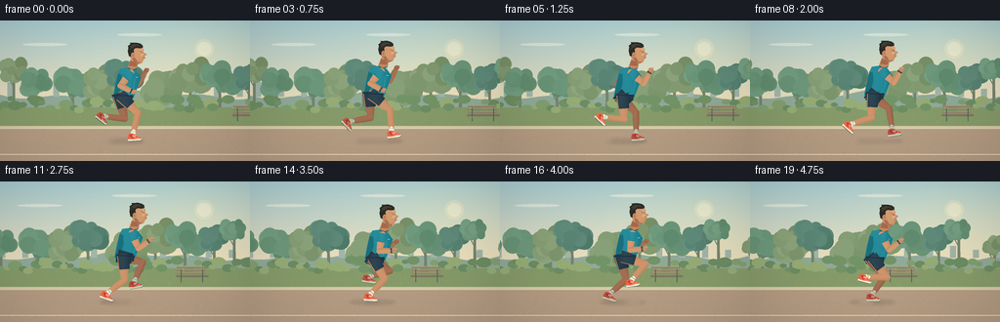
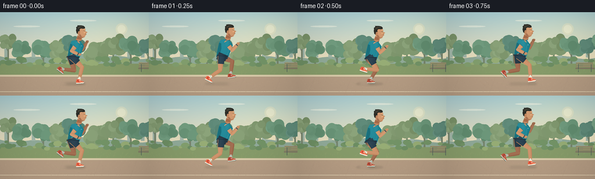

CODING AGENTS AS PIXEL WORLD MODELS
traex/GPT-6.1-Sol · instance_preservation_0032
点击播放 · 原生 RGB 像素
逐轮保存的候选
回放视频、检查图与代码变化。
每份候选均可单独播放。实际图片检查记录在下方工具轨迹中。
候选 01播放与检查图
点击播放 · 原生 RGB 像素


展开代码变化
--- 上一保存版本
+++ 本次保存版本
@@ -0,0 +1,288 @@
+from pathlib import Path
+import math
+import numpy as np
+from PIL import Image, ImageDraw, ImageFilter
+import artifact_io
+
+ROOT = Path(__file__).resolve().parent
+W, H, S = 256, 144, 4
+SW, SH = W*S, H*S
+rng = np.random.default_rng(142)
+
+def pt(p): return tuple(int(round(v*S)) for v in p)
+def poly(im, points, col): ImageDraw.Draw(im).polygon([pt(p) for p in points], fill=col)
+def line(im, points, col, width=1): ImageDraw.Draw(im).line([pt(p) for p in points], fill=col, width=max(1,int(width*S)), joint='curve')
+def ellipse(im, box, col): ImageDraw.Draw(im).ellipse(tuple(int(round(v*S)) for v in box), fill=col)
+def blendshape(im, points, base, light=18):
+ mask=Image.new('L',(SW,SH)); poly(mask,points,255)
+ x0,x1=min(p[0] for p in points), max(p[0] for p in points)
+ y0,y1=min(p[1] for p in points), max(p[1] for p in points)
+ yy,xx=np.mgrid[:SH,:SW].astype(np.float32); xx/=S; yy/=S
+ f=np.clip((xx-x0)/max(x1-x0,1),0,1)
+ shade=(np.sin(f*np.pi)*.7-f*.4+.15)*light + (1-np.clip((yy-y0)/max(y1-y0,1),0,1))*light*.15
+ arr=np.clip(np.array(base)[None,None,:]+shade[:,:,None],0,255).astype('uint8')
+ im.paste(Image.fromarray(arr), (0,0), mask)
+
+def limb(im,a,b,r0,r1,col):
+ a,b=np.array(a),np.array(b); v=b-a; length=np.linalg.norm(v); n=np.array([v[1],-v[0]])/length
+ verts=[]
+ for t in np.linspace(0,1,10):
+ r=r0*(1-t)+r1*t+.6*math.sin(math.pi*t)
+ verts.append(tuple(a+t*v+n*r))
+ for t in np.linspace(1,0,10):
+ r=r0*(1-t)+r1*t+.6*math.sin(math.pi*t)
+ verts.append(tuple(a+t*v-n*r))
+ # Round end caps, fused into a single shaded surface.
+ mask=Image.new('L',(SW,SH));poly(mask,verts,255)
+ ellipse(mask,(a[0]-r0,a[1]-r0,a[0]+r0,a[1]+r0),255)
+ ellipse(mask,(b[0]-r1,b[1]-r1,b[0]+r1,b[1]+r1),255)
+ yy,xx=np.mgrid[:SH,:SW].astype(np.float32);xx/=S;yy/=S
+ d=((xx-a[0])*n[0]+(yy-a[1])*n[1])/max(r0,r1)
+ sh=11*np.maximum(0,1-d*d)-6*d
+ arr=np.clip(np.array(col)[None,None,:]+sh[:,:,None],0,255).astype('uint8')
+ im.paste(Image.fromarray(arr),(0,0),mask)
+
+# A repeatable, long park panorama. The camera tracks the runner, so each layer
+# translates at a different rate, retaining its geometry and illumination.
+TREES=[]
+for i in range(35):
+ x=i*30+rng.uniform(-7,7)
+ TREES.append((x,rng.uniform(25,47),rng.uniform(10,19),int(rng.integers(0,3))))
+BUSH=[]
+for i in range(140):
+ BUSH.append((i*7+rng.uniform(-3,3),rng.uniform(79,91),rng.uniform(3,8),int(rng.integers(0,4))))
+GRASS=[(rng.uniform(0,1100),rng.uniform(99,108),rng.uniform(1,3)) for _ in range(500)]
+
+def background(t):
+ yy,xx=np.mgrid[:SH,:SW].astype(np.float32);yf=yy/S;xf=xx/S
+ top=np.array([168,205,211]);bot=np.array([247,226,185])
+ f=np.clip(yf/98,0,1)
+ arr=top[None,None,:]*(1-f[:,:,None])+bot[None,None,:]*f[:,:,None]
+ glow=np.exp(-((xf-205)**2/7000+(yf-33)**2/2100))[:,:,None]
+ arr=np.clip(arr+glow*np.array([13,8,-2])[None,None,:],0,255)
+ im=Image.fromarray(arr.astype('uint8'))
+ # Soft morning sun and wisps.
+ sky=Image.new('RGBA',(SW,SH),(0,0,0,0))
+ ellipse(sky,(199,19,219,39),(255,239,192,72))
+ ellipse(sky,(202,22,216,36),(255,248,214,135))
+ im=Image.alpha_composite(im.convert('RGBA'),sky).convert('RGB')
+ for cx,cy in [(45,24),(142,14),(292,36)]:
+ x=(cx-t*2+80)%360-80
+ ellipse(im,(x-22,cy-1,x+24,cy+2),(216,228,217))
+ # Distant wooded ridge and quiet skyline.
+ points=[(-2,79)]
+ for x in range(-2,260,3):
+ y=76+3*math.sin((x+t*4)/30)+2*math.sin((x+t*4)/12)
+ points.append((x,y))
+ points.extend([(260,99),(-2,99)])
+ poly(im,points,(143,170,154))
+ for i in range(15):
+ x=(i*23.5-t*3+29)%355-45
+ hh=8+(i*7%11)
+ poly(im,[(x,78),(x,78-hh),(x+6,78-hh),(x+6,78)],(160,182,169))
+ # Park trees, softly mottled with non-repeating crowns.
+ tree_layer=Image.new('RGB',(SW,SH),(0,0,0)); mask=Image.new('L',(SW,SH))
+ for idx,(base,th,rad,kind) in enumerate(TREES):
+ x=(base-t*13+40)%1050-60
+ if x < -35 or x > 290: continue
+ trunk_y=95; crown_y=trunk_y-th
+ color=[(85,129,113),(102,146,118),(126,151,111)][kind]
+ poly(im,[(x-1.4,trunk_y),(x-.9,crown_y),(x+1.1,crown_y),(x+1.8,trunk_y)],(117,132,109))
+ line(im,[(x,crown_y+18),(x-7,crown_y+5)],(113,131,109),1)
+ line(im,[(x,crown_y+14),(x+6,crown_y+2)],(113,131,109),.8)
+ # Layered irregular oval leaf clusters, deterministic per tree.
+ rr=np.random.default_rng(idx+40)
+ for k in range(22):
+ dx=rr.uniform(-rad*.8,rad*.8); dy=rr.uniform(-rad*.6,rad*.6)
+ r=rr.uniform(rad*.35,rad*.58)
+ tint=int(rr.integers(-8,9)); c=tuple(max(0,v+tint) for v in color)
+ if dx < 0: c=tuple(min(255,v+8) for v in c)
+ ellipse(im,(x+dx-r,crown_y+dy-r,x+dx+r,crown_y+dy+r),c)
+ # Low shrubbery separates the lawn from the running track.
+ poly(im,[(0,89),(256,89),(256,111),(0,111)],(133,155,106))
+ for base,y,r,c in BUSH:
+ x=(base-t*19)%990-25
+ if -12<x<270:
+ colors=[(113,147,103),(129,159,111),(149,172,118),(107,141,99)]
+ ellipse(im,(x-r,y-r*.5,x+r,y+r*.8),colors[c])
+ # Wooden park bench behind the runner's lane.
+ bx=(239-t*21+200)%600-200
+ for by in [87,90,93]:
+ poly(im,[(bx,by),(bx+29,by),(bx+29,by+1.8),(bx,by+1.8)],(145,131,105))
+ line(im,[(bx+1,by),(bx+28,by)],(181,163,127),.5)
+ poly(im,[(bx-1,96),(bx+32,96),(bx+32,98),(bx-1,98)],(127,119,100))
+ line(im,[(bx+4,90),(bx+4,103)],(83,101,93),1.1)
+ line(im,[(bx+26,90),(bx+26,103)],(83,101,93),1.1)
+ for base,y,hh in GRASS:
+ x=(base-t*25)%1100-10
+ if 0<x<256:
+ line(im,[(x,y),(x+.7,y-hh)],(149,166,111),.35)
+ # Rubber running path with a perspective lane line and granular texture.
+ poly(im,[(0,109),(256,109),(256,144),(0,144)],(180,156,132))
+ poly(im,[(0,108),(256,108),(256,111),(0,111)],(212,199,165))
+ line(im,[(0,110),(256,110)],(228,217,187),.7)
+ line(im,[(0,137),(256,137)],(226,211,180),1.0)
+ for k in range(8):
+ x=(k*63-t*33)%504-80
+ line(im,[(x,112),(x-12,144)],(171,147,126),.45)
+ # Coherent subpixel flecks move with the ground, not random frame noise.
+ rr=np.random.default_rng(32)
+ for k in range(1050):
+ x=(rr.uniform(0,600)-t*33)%600-15; y=rr.uniform(112,144)
+ if 0<x<256:
+ c=(192,169,143) if k%2 else (169,146,125)
+ ellipse(im,(x,y,x+.35,y+.22),c)
+ return im
+
+
+def footpos(q):
+ keys=np.array([0,.17,.36,.49,.64,.77,.9,1.0])
+ xs=np.array([19,0,-20,-23,-13,6,20,19])
+ ys=np.array([117.6,117.6,114.0,100.7,97.3,101.5,111,117.6])
+ # Catmull-Rom interpolation of the continuous closed running cycle.
+ i=max(0,min(len(keys)-2,np.searchsorted(keys,q,side='right')-1))
+ u=(q-keys[i])/(keys[i+1]-keys[i])
+ def cubic(vals):
+ p0=vals[i-1] if i else vals[-2]
+ p1=vals[i];p2=vals[i+1];p3=vals[i+2] if i+2<len(vals) else vals[1]
+ return .5*((2*p1)+(-p0+p2)*u+(2*p0-5*p1+4*p2-p3)*u*u+(-p0+3*p1-3*p2+p3)*u*u*u)
+ return np.array([cubic(xs),cubic(ys)])
+
+def ik(hip,ankle):
+ v=ankle-hip; d=np.linalg.norm(v); a,b=24.0,24.0
+ d=min(d,a+b-.05); u=v/np.linalg.norm(v)
+ along=(a*a-b*b+d*d)/(2*d)
+ normal=np.array([u[1],-u[0]])
+ return hip+u*along+normal*math.sqrt(max(0,a*a-along*along))
+
+def shoe(im,ankle,q,far):
+ angles=np.array([-.1,0,.45,.95,.4,-.15,-.18,-.1])
+ keys=np.array([0,.17,.36,.49,.64,.77,.9,1])
+ angle=float(np.interp(q,keys,angles))
+ rot=np.array([[math.cos(angle),-math.sin(angle)],[math.sin(angle),math.cos(angle)]])
+ def coords(ps):return [tuple(ankle+rot@np.array(p)) for p in ps]
+ base=(181,73,54) if far else (231,96,66)
+ blendshape(im,coords([(-4,-2),(-1,-3),(2,-2),(4,.2),(7,1.3),(8.7,2.8),(8.5,4.5),(-4,4.5),(-5,2)]),base,14)
+ poly(im,coords([(-5,3),(0,3.5),(8.7,2.9),(9,4.5),(7.5,5.1),(-4.5,5)]),(206,209,191) if far else (246,240,220))
+ line(im,coords([(-4,5),(7.5,5),(9,4.3)]),(63,73,69),.6)
+ poly(im,coords([(-3,-1),(-.8,-1.6),(1.7,1.8),(-.8,2.2)]),(151,61,49) if far else (198,66,46))
+ for x in [.8,2,3.2]:line(im,coords([(x,-.5),(x-1,1.1)]),(219,219,198) if far else (252,239,215),.55)
+ line(im,coords([(2,2.2),(4.5,2.8),(6.5,1.6)]),(247,207,153),.65)
+
+def drawleg(im,hip,knee,ankle,q,far):
+ col=(151,99,72) if far else (195,137,98)
+ limb(im,hip,knee,5.0,3.1,col)
+ limb(im,knee,ankle,3.2,1.75,col)
+ # Calf definition and ankle sock follow the skeleton.
+ a=ankle+(knee-ankle)*.2
+ limb(im,a,ankle,2.0,1.9,(185,191,177) if far else (236,235,214))
+ v=knee-ankle; n=np.array([v[1],-v[0]])/np.linalg.norm(v)
+ line(im,[tuple(a-n*2),tuple(a+n*2)],(99,136,139),.6)
+ shoe(im,ankle,q,far)
+
+def shorts(im,hip,knee,far):
+ v=(knee-hip)/np.linalg.norm(knee-hip);n=np.array([v[1],-v[0]])
+ end=hip+v*12.5
+ ps=[hip+n*6.5-v*3,hip-n*6.5-v*3,end-n*5.2,end+n*5.8]
+ blendshape(im,[tuple(p) for p in ps],(30,50,63) if far else (34,58,74),13)
+ line(im,[tuple(end-n*4.5),tuple(end+n*5.5)],(43,70,80),.7)
+ line(im,[tuple(hip-n*5.5-v*1),tuple(end-n*4.8)],(209,135,85),.9)
+ if not far:
+ line(im,[tuple(hip+v*2-n*1.8),tuple(end-n*1.5)],(51,73,83),.55)
+
+def arm(im,shoulder,q,far):
+ ang=-.83*math.cos(2*math.pi*q)+.06
+ elbow=shoulder+np.array([math.sin(ang),math.cos(ang)])*16.6
+ hand=elbow+np.array([math.sin(ang+1.80),math.cos(ang+1.80)])*15.2
+ col=(153,103,75) if far else (199,143,103)
+ limb(im,shoulder,elbow,3.7,2.5,col)
+ limb(im,elbow,hand,2.7,1.8,col)
+ ellipse(im,(hand[0]-2.4,hand[1]-2.6,hand[0]+2.8,hand[1]+1.8),col)
+ ellipse(im,(hand[0]+.3,hand[1]-2.6,hand[0]+3,hand[1]-.1),tuple(min(255,c+8) for c in col))
+ line(im,[(hand[0]+1,hand[1]-.4),(hand[0]+2.8,hand[1]-.1)],(132,85,64),.4)
+ v=(elbow-shoulder)/16.6;n=np.array([v[1],-v[0]])
+ end=shoulder+v*7
+ blendshape(im,[tuple(shoulder+n*4.8-v*2),tuple(shoulder-n*4.6-v*2),tuple(end-n*4.2),tuple(end+n*4.2)],(28,98,110) if far else (27,130,146),17)
+ line(im,[tuple(end-n*4),tuple(end+n*4)],(31,109,119),.65)
+ if not far:
+ # Slim sports watch at the wrist, maintained in all poses.
+ wrist=hand+(elbow-hand)*.18
+ normal=np.array([(hand-elbow)[1],-(hand-elbow)[0]]);normal/=np.linalg.norm(normal)
+ line(im,[tuple(wrist-normal*2.25),tuple(wrist+normal*2.25)],(36,52,57),1.5)
+ ellipse(im,(wrist[0]-.9,wrist[1]-.9,wrist[0]+.9,wrist[1]+.9),(80,99,100))
+
+def runner(im,t):
+ q=(t*1.18+.07)%1
+ bob=1.5*math.cos(4*math.pi*(q-.17))
+ x=123+1.8*math.sin(t*.43)
+ hip=np.array([x,77.3+bob]); shift=np.array([x-123,bob])
+ hips=[hip+np.array([-1.7,-.3]),hip+np.array([1.2,.2])]
+ phases=[(q+.5)%1,q]
+ ankles=[np.array([x+footpos(p)[0],footpos(p)[1]]) for p in phases]
+ knees=[ik(h,a) for h,a in zip(hips,ankles)]
+ # Contact shadow is soft, separate from the silhouette.
+ layer=Image.new('RGBA',(SW,SH),(0,0,0,0))
+ airborne=min(a[1] for a in ankles)<116 and max(a[1] for a in ankles)<116
+ ellipse(layer,(x-23,121.2,x+24,126),(69,71,58,27 if airborne else 43))
+ for a in ankles:
+ alpha=int(np.clip((a[1]-108)*7,0,65))
+ ellipse(layer,(a[0]-6,122,a[0]+11,125),(60,63,53,alpha))
+ layer=layer.filter(ImageFilter.GaussianBlur(1.5*S)); im.paste(Image.alpha_composite(im.convert('RGBA'),layer).convert('RGB'))
+ drawleg(im,hips[0],knees[0],ankles[0],phases[0],True)
+ shorts(im,hips[0],knees[0],True)
+ sh=np.array([132.8,53.2])+shift
+ arm(im,sh+np.array([-3,-.6]),phases[0],True)
+ # The lightly fitted technical shirt follows the same torso at every stride.
+ def off(ps):return [tuple(np.array(p)+shift) for p in ps]
+ blendshape(im,off([(123.5,48.8),(132.5,47.6),(139.3,50.8),(144.3,57.8),(141.1,66.5),(136.4,79),(115.7,78),(118.2,64.3),(120.8,54)]),(22,124,140),20)
+ poly(im,off([(120.8,54),(124.3,55),(124.6,64),(121,76.8),(116.3,77.1)]),(24,111,125))
+ line(im,off([(138,59),(136.2,70),(132.8,76.5)]),(64,156,163),.7)
+ line(im,off([(121,73),(126,74.4),(132,73.5)]),(20,107,124),.65)
+ line(im,off([(117.5,77.6),(125.6,78.3),(135.9,78)]),(21,86,100),1)
+ # Tiny unbranded reflective detail at chest.
+ line(im,off([(139,57.5),(141.1,57.5)]),(176,221,216),.7)
+ drawleg(im,hips[1],knees[1],ankles[1],phases[1],False)
+ blendshape(im,off([(117,75),(136,76),(135,82),(117,83)]),(34,55,69),10)
+ shorts(im,hips[0],knees[0],True)
+ shorts(im,hips[1],knees[1],False)
+ line(im,off([(118,75.8),(127,76.4),(135.8,76.4)]),(27,47,59),1.1)
+ # Neck, profile and cropped dark hair. Facial marks stay anchored to the skull.
+ blendshape(im,off([(133.6,39.5),(141.7,41.1),(140.1,48.4),(135.4,51.2),(130.7,47.4)]),(184,126,88),15)
+ poly(im,off([(133.6,40.6),(140.7,42.8),(138.9,46.7),(132.1,45.8)]),(164,105,74))
+ line(im,off([(131,48),(135.1,50.2),(139.9,48.9)]),(32,92,107),1.1)
+ blendshape(im,off([(133.3,26.2),(140,24),(144.3,25.3),(147.1,29.4),(146.6,32),(150.4,34),(148.1,35.8),(148.5,38.1),(147.1,39.3),(145.2,43.1),(140.8,43.9),(135.2,40.7),(132.4,35.5)]),(199,143,102),17)
+ poly(im,off([(142.8,27.5),(146.1,29.3),(145.8,32),(147.4,34.2),(145.6,36.2),(143.7,35.9),(144.5,31.2)]),(226,170,124))
+ poly(im,off([(134.8,37),(138.2,37.8),(141.1,42.4),(145.1,42),(142.1,44),(137.2,42)]),(168,113,81))
+ # Hair has a continuous, recognisable short swept-back silhouette.
+ poly(im,off([(131.9,36.1),(130.8,31),(131.4,27.1),(130.8,25.8),(133.5,23.6),(132.9,22.3),(137,22),(140.2,22.2),(143.5,23),(145.8,24.7),(146.2,27),(143.7,28),(138.9,27.6),(136.8,29.1),(137,33.9),(134.9,36.9)]),(41,43,39))
+ poly(im,off([(132.4,26.3),(136.5,23.6),(140.5,23.9),(144.4,25.9),(139.2,25.3),(135,27.6)]),(66,64,53))
+ line(im,off([(132.7,29.3),(134.9,27.4),(138.2,26.8)]),(78,73,59),.5)
+ ellipse(im,tuple(v for p in off([(134,32.4),(138,37.8)]) for v in p),(202,142,102))
+ line(im,off([(136,34),(135.2,35),(136.4,36.1)]),(145,96,71),.65)
+ line(im,off([(143.2,30.9),(146.1,31.4)]),(68,61,49),.7)
+ line(im,off([(144.5,32.4),(146.2,32.6)]),(46,54,47),.5)
+ line(im,off([(146.6,37.8),(148.4,37.6)]),(123,79,62),.55)
+ line(im,off([(146.7,35.4),(147.8,35.6)]),(142,91,65),.45)
+ # Subtle stubble below the cheek, not a changing texture.
+ for dx,dy in [(141.6,40.4),(142.7,41.2),(144.1,40.7),(145.4,40.2),(139.9,39.5)]:
+ line(im,off([(dx,dy),(dx+.2,dy+.4)]),(138,107,83),.25)
+ arm(im,sh+np.array([.8,.3]),phases[1],False)
+ return im
+
+
+def main():
+ frames=[]
+ for i in range(20):
+ t=i/4
+ im=runner(background(t),t)
+ im=im.resize((W,H),Image.Resampling.LANCZOS)
+ # Gentle photographic grading, with an unobtrusive fixed lens vignette.
+ a=np.asarray(im).astype(np.float32)
+ yy,xx=np.mgrid[:H,:W]
+ v=1-.075*((xx-W/2)/(W/2))**2-.04*((yy-H/2)/(H/2))**2
+ a=a*v[:,:,None]+np.array([2,1,0])[None,None,:]
+ frames.append(np.clip(a,0,255).astype(np.uint8))
+ artifact_io.save(np.stack(frames),ROOT)
+ print('Saved 20 RGB frames, 256 x 144, 4 fps to',ROOT)
+
+if __name__=='__main__':main()
可观测工具轨迹
实际执行的命令与返回图片。
命令 1exit 0
/bin/bash -lc "ls -la && cat prompt.txt && printf '\\n---RULES---\\n' && cat GENERATION_RULES.md && printf '\\n---SPEC---\\n' && cat task_spec.json"
命令 2exit 0
/bin/bash -lc "cat artifact_io.py && python - <<'PY'
import numpy, PIL
print('numpy',numpy.__version__,'PIL',PIL.__version__)
PY"命令 3exit 0
/bin/bash -lc "cat > generate.py <<'PY'
from pathlib import Path
import math
import numpy as np
from PIL import Image, ImageDraw, ImageFilter
import artifact_io
ROOT = Path(__file__).resolve().parent
W, H, S = 256, 144, 4
SW, SH = W*S, H*S
rng = np.random.default_rng(142)
def pt(p): return tuple(int(round(v*S)) for v in p)
def poly(im, points, col): ImageDraw.Draw(im).polygon([pt(p) for p in points], fill=col)
def line(im, points, col, width=1): ImageDraw.Draw(im).line([pt(p) for p in points], fill=col, width=max(1,int(width*S)), joint='curve')
def ellipse(im, box, col): ImageDraw.Draw(im).ellipse(tuple(int(round(v*S)) for v in box), fill=col)
def blendshape(im, points, base, light=18):
mask=Image.new('L',(SW,SH)); poly(mask,points,255)
x0,x1=min(p[0] for p in points), max(p[0] for p in points)
y0,y1=min(p[1] for p in points), max(p[1] for p in points)
yy,xx=np.mgrid[:SH,:SW].astype(np.float32); xx/=S; yy/=S
f=np.clip((xx-x0)/max(x1-x0,1),0,1)
shade=(np.sin(f*np.pi)*.7-f*.4+.15)*light + (1-np.clip((yy-y0)/max(y1-y0,1),0,1))*light*.15
arr=np.clip(np.array(base)[None,None,:]+shade[:,:,None],0,255).astype('uint8')
im.paste(Image.fromarray(arr), (0,0), mask)
def limb(im,a,b,r0,r1,col):
a,b=np.array(a),np.array(b); v=b-a; length=np.linalg.norm(v); n=np.array([v[1],-v[0]])/length
verts=[]
for t in np.linspace(0,1,10):
r=r0*(1-t)+r1*t+.6*math.sin(math.pi*t)
verts.append(tuple(a+t*v+n*r))
for t in np.linspace(1,0,10):
r=r0*(1-t)+r1*t+.6*math.sin(math.pi*t)
verts.append(tuple(a+t*v-n*r))
# Round end caps, fused into a single shaded surface.
mask=Image.new('L',(SW,SH));poly(mask,verts,255)
ellipse(mask,(a[0]-r0,a[1]-r0,a[0]+r0,a[1]+r0),255)
ellipse(mask,(b[0]-r1,b[1]-r1,b[0]+r1,b[1]+r1),255)
yy,xx=np.mgrid[:SH,:SW].astype(np.float32);xx/=S;yy/=S
d=((xx-a[0])*n[0]+(yy-a[1])*n[1])/max(r0,r1)
sh=11*np.maximum(0,1-d*d)-6*d
arr=np.clip(np.array(col)[None,None,:]+sh[:,:,None],0,255).astype('uint8')
im.paste(Image.fromarray(arr),(0,0),mask)
# A repeatable, long park panorama. The camera tracks the runner, so each layer
# translates at a different rate, retaining its geometry and illumination.
TREES=[]
for i in range(35):
x=i*30+rng.uniform(-7,7)
TREES.append((x,rng.uniform(25,47),rng.uniform(10,19),int(rng.integers(0,3))))
BUSH=[]
for i in range(140):
BUSH.append((i*7+rng.uniform(-3,3),rng.uniform(79,91),rng.uniform(3,8),int(rng.integers(0,4))))
GRASS=[(rng.uniform(0,1100),rng.uniform(99,108),rng.uniform(1,3)) for _ in range(500)]
def background(t):
yy,xx=np.mgrid[:SH,:SW].astype(np.float32);yf=yy/S;xf=xx/S
top=np.array([168,205,211]);bot=np.array([247,226,185])
f=np.clip(yf/98,0,1)
arr=top[None,None,:]*(1-f[:,:,None])+bot[None,None,:]*f[:,:,None]
glow=np.exp(-((xf-205)**2/7000+(yf-33)**2/2100))[:,:,None]
arr=np.clip(arr+glow*np.array([13,8,-2])[None,None,:],0,255)
im=Image.fromarray(arr.astype('uint8'))
# Soft morning sun and wisps.
sky=Image.new('RGBA',(SW,SH),(0,0,0,0))
ellipse(sky,(199,19,219,39),(255,239,192,72))
ellipse(sky,(202,22,216,36),(255,248,214,135))
im=Image.alpha_composite(im.convert('RGBA'),sky).convert('RGB')
for cx,cy in [(45,24),(142,14),(292,36)]:
x=(cx-t*2+80)%360-80
ellipse(im,(x-22,cy-1,x+24,cy+2),(216,228,217))
# Distant wooded ridge and quiet skyline.
points=[(-2,79)]
for x in range(-2,260,3):
y=76+3*math.sin((x+t*4)/30)+2*math.sin((x+t*4)/12)
points.append((x,y))
points.extend([(260,99),(-2,99)])
poly(im,points,(143,170,154))
for i in range(15):
x=(i*23.5-t*3+29)%355-45
hh=8+(i*7%11)
poly(im,[(x,78),(x,78-hh),(x+6,78-hh),(x+6,78)],(160,182,169))
# Park trees, softly mottled with non-repeating crowns.
tree_layer=Image.new('RGB',(SW,SH),(0,0,0)); mask=Image.new('L',(SW,SH))
for idx,(base,th,rad,kind) in enumerate(TREES):
x=(base-t*13+40)%1050-60
if x < -35 or x > 290: continue
trunk_y=95; crown_y=trunk_y-th
color=[(85,129,113),(102,146,118),(126,151,111)][kind]
poly(im,[(x-1.4,trunk_y),(x-.9,crown_y),(x+1.1,crown_y),(x+1.8,trunk_y)],(117,132,109))
line(im,[(x,crown_y+18),(x-7,crown_y+5)],(113,131,109),1)
line(im,[(x,crown_y+14),(x+6,crown_y+2)],(113,131,109),.8)
# Layered irregular oval leaf clusters, deterministic per tree.
rr=np.random.default_rng(idx+40)
for k in range(22):
dx=rr.uniform(-rad*.8,rad*.8); dy=rr.uniform(-rad*.6,rad*.6)
r=rr.uniform(rad*.35,rad*.58)
tint=int(rr.integers(-8,9)); c=tuple(max(0,v+tint) for v in color)
if dx < 0: c=tuple(min(255,v+8) for v in c)
ellipse(im,(x+dx-r,crown_y+dy-r,x+dx+r,crown_y+dy+r),c)
# Low shrubbery separates the lawn from the running track.
poly(im,[(0,89),(256,89),(256,111),(0,111)],(133,155,106))
for base,y,r,c in BUSH:
x=(base-t*19)%990-25
if -12<x<270:
colors=[(113,147,103),(129,159,111),(149,172,118),(107,141,99)]
ellipse(im,(x-r,y-r*.5,x+r,y+r*.8),colors[c])
# Wooden park bench behind the runner's lane.
bx=(239-t*21+200)%600-200
for by in [87,90,93]:
poly(im,[(bx,by),(bx+29,by),(bx+29,by+1.8),(bx,by+1.8)],(145,131,105))
line(im,[(bx+1,by),(bx+28,by)],(181,163,127),.5)
poly(im,[(bx-1,96),(bx+32,96),(bx+32,98),(bx-1,98)],(127,119,100))
line(im,[(bx+4,90),(bx+4,103)],(83,101,93),1.1)
line(im,[(bx+26,90),(bx+26,103)],(83,101,93),1.1)
for base,y,hh in GRASS:
x=(base-t*25)%1100-10
if 0<x<256:
line(im,[(x,y),(x+.7,y-hh)],(149,166,111),.35)
# Rubber running path with a perspective lane line and granular texture.
poly(im,[(0,109),(256,109),(256,144),(0,144)],(180,156,132))
poly(im,[(0,108),(256,108),(256,111),(0,111)],(212,199,165))
line(im,[(0,110),(256,110)],(228,217,187),.7)
line(im,[(0,137),(256,137)],(226,211,180),1.0)
for k in range(8):
x=(k*63-t*33)%504-80
line(im,[(x,112),(x-12,144)],(171,147,126),.45)
# Coherent subpixel flecks move with the ground, not random frame noise.
rr=np.random.default_rng(32)
for k in range(1050):
x=(rr.uniform(0,600)-t*33)%600-15; y=rr.uniform(112,144)
if 0<x<256:
c=(192,169,143) if k%2 else (169,146,125)
ellipse(im,(x,y,x+.35,y+.22),c)
return im
def footpos(q):
keys=np.array([0,.17,.36,.49,.64,.77,.9,1.0])
xs=np.array([19,0,-20,-23,-13,6,20,19])
ys=np.array([117.6,117.6,114.0,100.7,97.3,101.5,111,117.6])
# Catmull-Rom interpolation of the continuous closed running cycle.
i=max(0,min(len(keys)-2,np.searchsorted(keys,q,side='right')-1))
u=(q-keys[i])/(keys[i+1]-keys[i])
def cubic(vals):
p0=vals[i-1] if i else vals[-2]
p1=vals[i];p2=vals[i+1];p3=vals[i+2] if i+2<len(vals) else vals[1]
return .5*((2*p1)+(-p0+p2)*u+(2*p0-5*p1+4*p2-p3)*u*u+(-p0+3*p1-3*p2+p3)*u*u*u)
return np.array([cubic(xs),cubic(ys)])
def ik(hip,ankle):
v=ankle-hip; d=np.linalg.norm(v); a,b=24.0,24.0
d=min(d,a+b-.05); u=v/np.linalg.norm(v)
along=(a*a-b*b+d*d)/(2*d)
normal=np.array([u[1],-u[0]])
return hip+u*along+normal*math.sqrt(max(0,a*a-along*along))
def shoe(im,ankle,q,far):
angles=np.array([-.1,0,.45,.95,.4,-.15,-.18,-.1])
keys=np.array([0,.17,.36,.49,.64,.77,.9,1])
angle=float(np.interp(q,keys,angles))
rot=np.array([[math.cos(angle),-math.sin(angle)],[math.sin(angle),math.cos(angle)]])
def coords(ps):return [tuple(ankle+rot@np.array(p)) for p in ps]
base=(181,73,54) if far else (231,96,66)
blendshape(im,coords([(-4,-2),(-1,-3),(2,-2),(4,.2),(7,1.3),(8.7,2.8),(8.5,4.5),(-4,4.5),(-5,2)]),base,14)
poly(im,coords([(-5,3),(0,3.5),(8.7,2.9),(9,4.5),(7.5,5.1),(-4.5,5)]),(206,209,191) if far else (246,240,220))
line(im,coords([(-4,5),(7.5,5),(9,4.3)]),(63,73,69),.6)
poly(im,coords([(-3,-1),(-.8,-1.6),(1.7,1.8),(-.8,2.2)]),(151,61,49) if far else (198,66,46))
for x in [.8,2,3.2]:line(im,coords([(x,-.5),(x-1,1.1)]),(219,219,198) if far else (252,239,215),.55)
line(im,coords([(2,2.2),(4.5,2.8),(6.5,1.6)]),(247,207,153),.65)
def drawleg(im,hip,knee,ankle,q,far):
col=(151,99,72) if far else (195,137,98)
limb(im,hip,knee,5.0,3.1,col)
limb(im,knee,ankle,3.2,1.75,col)
# Calf definition and ankle sock follow the skeleton.
a=ankle+(knee-ankle)*.2
limb(im,a,ankle,2.0,1.9,(185,191,177) if far else (236,235,214))
v=knee-ankle; n=np.array([v[1],-v[0]])/np.linalg.norm(v)
line(im,[tuple(a-n*2),tuple(a+n*2)],(99,136,139),.6)
shoe(im,ankle,q,far)
def shorts(im,hip,knee,far):
v=(knee-hip)/np.linalg.norm(knee-hip);n=np.array([v[1],-v[0]])
end=hip+v*12.5
ps=[hip+n*6.5-v*3,hip-n*6.5-v*3,end-n*5.2,end+n*5.8]
blendshape(im,[tuple(p) for p in ps],(30,50,63) if far else (34,58,74),13)
line(im,[tuple(end-n*4.5),tuple(end+n*5.5)],(43,70,80),.7)
line(im,[tuple(hip-n*5.5-v*1),tuple(end-n*4.8)],(209,135,85),.9)
if not far:
line(im,[tuple(hip+v*2-n*1.8),tuple(end-n*1.5)],(51,73,83),.55)
def arm(im,shoulder,q,far):
ang=-.83*math.cos(2*math.pi*q)+.06
elbow=shoulder+np.array([math.sin(ang),math.cos(ang)])*16.6
hand=elbow+np.array([math.sin(ang+1.80),math.cos(ang+1.80)])*15.2
col=(153,103,75) if far else (199,143,103)
limb(im,shoulder,elbow,3.7,2.5,col)
limb(im,elbow,hand,2.7,1.8,col)
ellipse(im,(hand[0]-2.4,hand[1]-2.6,hand[0]+2.8,hand[1]+1.8),col)
ellipse(im,(hand[0]+.3,hand[1]-2.6,hand[0]+3,hand[1]-.1),tuple(min(255,c+8) for c in col))
line(im,[(hand[0]+1,hand[1]-.4),(hand[0]+2.8,hand[1]-.1)],(132,85,64),.4)
v=(elbow-shoulder)/16.6;n=np.array([v[1],-v[0]])
end=shoulder+v*7
blendshape(im,[tuple(shoulder+n*4.8-v*2),tuple(shoulder-n*4.6-v*2),tuple(end-n*4.2),tuple(end+n*4.2)],(28,98,110) if far else (27,130,146),17)
line(im,[tuple(end-n*4),tuple(end+n*4)],(31,109,119),.65)
if not far:
# Slim sports watch at the wrist, maintained in all poses.
wrist=hand+(elbow-hand)*.18
normal=np.array([(hand-elbow)[1],-(hand-elbow)[0]]);normal/=np.linalg.norm(normal)
line(im,[tuple(wrist-normal*2.25),tuple(wrist+normal*2.25)],(36,52,57),1.5)
ellipse(im,(wrist[0]-.9,wrist[1]-.9,wrist[0]+.9,wrist[1]+.9),(80,99,100))
def runner(im,t):
q=(t*1.18+.07)%1
bob=1.5*math.cos(4*math.pi*(q-.17))
x=123+1.8*math.sin(t*.43)
hip=np.array([x,77.3+bob]); shift=np.array([x-123,bob])
hips=[hip+np.array([-1.7,-.3]),hip+np.array([1.2,.2])]
phases=[(q+.5)%1,q]
ankles=[np.array([x+footpos(p)[0],footpos(p)[1]]) for p in phases]
knees=[ik(h,a) for h,a in zip(hips,ankles)]
# Contact shadow is soft, separate from the silhouette.
layer=Image.new('RGBA',(SW,SH),(0,0,0,0))
airborne=min(a[1] for a in ankles)<116 and max(a[1] for a in ankles)<116
ellipse(layer,(x-23,121.2,x+24,126),(69,71,58,27 if airborne else 43))
for a in ankles:
alpha=int(np.clip((a[1]-108)*7,0,65))
ellipse(layer,(a[0]-6,122,a[0]+11,125),(60,63,53,alpha))
layer=layer.filter(ImageFilter.GaussianBlur(1.5*S)); im.paste(Image.alpha_composite(im.convert('RGBA'),layer).convert('RGB'))
drawleg(im,hips[0],knees[0],ankles[0],phases[0],True)
shorts(im,hips[0],knees[0],True)
sh=np.array([132.8,53.2])+shift
arm(im,sh+np.array([-3,-.6]),phases[0],True)
# The lightly fitted technical shirt follows the same torso at every stride.
def off(ps):return [tuple(np.array(p)+shift) for p in ps]
blendshape(im,off([(123.5,48.8),(132.5,47.6),(139.3,50.8),(144.3,57.8),(141.1,66.5),(136.4,79),(115.7,78),(118.2,64.3),(120.8,54)]),(22,124,140),20)
poly(im,off([(120.8,54),(124.3,55),(124.6,64),(121,76.8),(116.3,77.1)]),(24,111,125))
line(im,off([(138,59),(136.2,70),(132.8,76.5)]),(64,156,163),.7)
line(im,off([(121,73),(126,74.4),(132,73.5)]),(20,107,124),.65)
line(im,off([(117.5,77.6),(125.6,78.3),(135.9,78)]),(21,86,100),1)
# Tiny unbranded reflective detail at chest.
line(im,off([(139,57.5),(141.1,57.5)]),(176,221,216),.7)
drawleg(im,hips[1],knees[1],ankles[1],phases[1],False)
blendshape(im,off([(117,75),(136,76),(135,82),(117,83)]),(34,55,69),10)
shorts(im,hips[0],knees[0],True)
shorts(im,hips[1],knees[1],False)
line(im,off([(118,75.8),(127,76.4),(135.8,76.4)]),(27,47,59),1.1)
# Neck, profile and cropped dark hair. Facial marks stay anchored to the skull.
blendshape(im,off([(133.6,39.5),(141.7,41.1),(140.1,48.4),(135.4,51.2),(130.7,47.4)]),(184,126,88),15)
poly(im,off([(133.6,40.6),(140.7,42.8),(138.9,46.7),(132.1,45.8)]),(164,105,74))
line(im,off([(131,48),(135.1,50.2),(139.9,48.9)]),(32,92,107),1.1)
blendshape(im,off([(133.3,26.2),(140,24),(144.3,25.3),(147.1,29.4),(146.6,32),(150.4,34),(148.1,35.8),(148.5,38.1),(147.1,39.3),(145.2,43.1),(140.8,43.9),(135.2,40.7),(132.4,35.5)]),(199,143,102),17)
poly(im,off([(142.8,27.5),(146.1,29.3),(145.8,32),(147.4,34.2),(145.6,36.2),(143.7,35.9),(144.5,31.2)]),(226,170,124))
poly(im,off([(134.8,37),(138.2,37.8),(141.1,42.4),(145.1,42),(142.1,44),(137.2,42)]),(168,113,81))
# Hair has a continuous, recognisable short swept-back silhouette.
poly(im,off([(131.9,36.1),(130.8,31),(131.4,27.1),(130.8,25.8),(133.5,23.6),(132.9,22.3),(137,22),(140.2,22.2),(143.5,23),(145.8,24.7),(146.2,27),(143.7,28),(138.9,27.6),(136.8,29.1),(137,33.9),(134.9,36.9)]),(41,43,39))
poly(im,off([(132.4,26.3),(136.5,23.6),(140.5,23.9),(144.4,25.9),(139.2,25.3),(135,27.6)]),(66,64,53))
line(im,off([(132.7,29.3),(134.9,27.4),(138.2,26.8)]),(78,73,59),.5)
ellipse(im,tuple(v for p in off([(134,32.4),(138,37.8)]) for v in p),(202,142,102))
line(im,off([(136,34),(135.2,35),(136.4,36.1)]),(145,96,71),.65)
line(im,off([(143.2,30.9),(146.1,31.4)]),(68,61,49),.7)
line(im,off([(144.5,32.4),(146.2,32.6)]),(46,54,47),.5)
line(im,off([(146.6,37.8),(148.4,37.6)]),(123,79,62),.55)
line(im,off([(146.7,35.4),(147.8,35.6)]),(142,91,65),.45)
# Subtle stubble below the cheek, not a changing texture.
for dx,dy in [(141.6,40.4),(142.7,41.2),(144.1,40.7),(145.4,40.2),(139.9,39.5)]:
line(im,off([(dx,dy),(dx+.2,dy+.4)]),(138,107,83),.25)
arm(im,sh+np.array([.8,.3]),phases[1],False)
return im
def main():
frames=[]
for i in range(20):
t=i/4
im=runner(background(t),t)
im=im.resize((W,H),Image.Resampling.LANCZOS)
# Gentle photographic grading, with an unobtrusive fixed lens vignette.
a=np.asarray(im).astype(np.float32)
yy,xx=np.mgrid[:H,:W]
v=1-.075*((xx-W/2)/(W/2))**2-.04*((yy-H/2)/(H/2))**2
a=a*v[:,:,None]+np.array([2,1,0])[None,None,:]
frames.append(np.clip(a,0,255).astype(np.uint8))
artifact_io.save(np.stack(frames),ROOT)
print('Saved 20 RGB frames, 256 x 144, 4 fps to',ROOT)
if __name__=='__main__':main()
PY
python generate.py"命令 4exit 0
/bin/bash -lc "python - <<'PY'
from pathlib import Path
from PIL import Image
import numpy as np
p=Path('.')
z=np.load(p/'pixels.npz')['pixels']
assert z.shape==(144,256,20)
f=sorted((p/'frames').glob('*.png'))
assert len(f)==20
assert all(Image.open(x).size==(256,144) and Image.open(x).mode=='RGB' for x in f)
assert all((p/n).exists() for n in ['generate.py','index.html','pixels.npz','inspection.png','transition_check.png'])
print('Verified RGB artifacts:',len(f),'frames; packed tensor',z.shape)
PY
command -v ffmpeg || true"保存候选 1 份；完成命令 4 次；可验证图片返回 0 张。原始 API 响应与完整日志保留在本地。